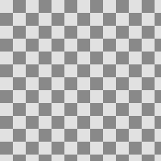

Map Absolute
sample input with an auxiliary buffer that contain absolute source coordinates
Resampling method
name: sampler-type
type: enum
Abyss policy
name: abyss-policy
type: enum
pads: aux input output
parent-class: GeglOperationComposer
categories: map
source: operations/common/map-absolute.c
position-dependent: true
 This page is part of the online GEGL Documentation, GEGL is a data flow based image processing library/framework, made to fuel GIMPs high-bit depth non-destructive editing future.
This page is part of the online GEGL Documentation, GEGL is a data flow based image processing library/framework, made to fuel GIMPs high-bit depth non-destructive editing future.